TL;DR Optical flow must combine evidence across pixels without mixing different motions. Modern networks match fixed grid cells and leave it to learning whether a cell's evidence fits the pixels it represents. DACE learns the correspondence units themselves: one set of soft pixel-to-unit assignments gathers each unit's matching evidence and returns its predicted flow to the same pixels. The gains are largest where no match is visible and near motion boundaries.
Abstract
Reliable optical flow requires combining evidence across pixels without mixing different motions. Modern networks strengthen matching and the use of context, but generally retain fixed-grid correspondence units and link their matching evidence to pixel motion indirectly. We introduce Dense flow from Adaptive CorrespondencE (DACE), which learns the pixel support of correspondence units jointly with motion estimation. Shared soft pixel-to-unit assignments pool matching features, define unit-flow targets, and distribute predicted flow to pixels. Assignments are resolved at image resolution, while matching and refinement operate over fewer units. Under the standard zero-shot protocol, DACE achieves the lowest average flow error on Sintel Final and KITTI among the compared methods. We also find that a small fraction of pixels with occluded or out-of-frame targets accounts for roughly half of the average flow error in a fine-grid baseline. DACE reduces error in these regions and near motion boundaries. Controlled studies support adaptive units as a way to use context while preserving distinct motions.
Share evidence across pixels, keep different motions apart
Edges, weak texture and missing matches need information beyond a single pixel, yet nearby pixels need not share motion. Reliable flow must resolve ambiguity through spatial context without blurring motion boundaries.
A fine structure moves differently from its surroundings.
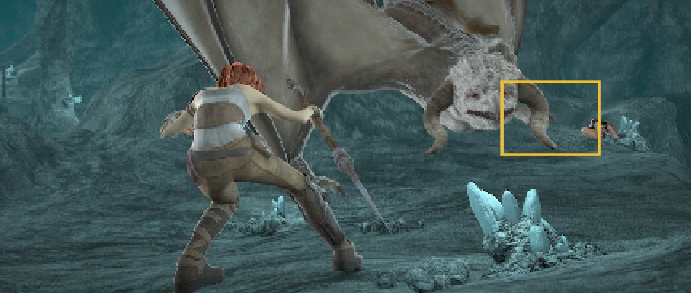
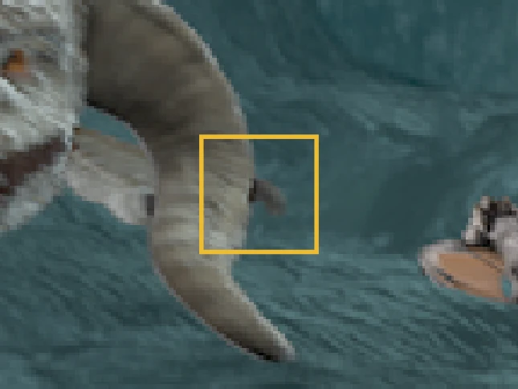
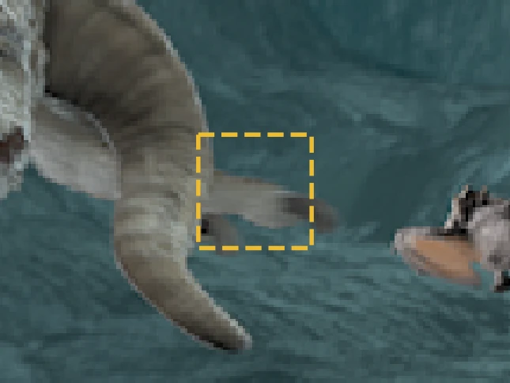
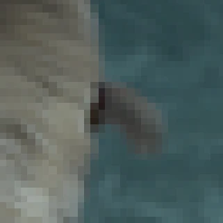
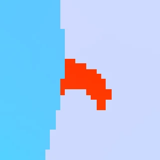
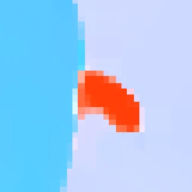
A wing hides a background patch in Image 2, removing its visible match.
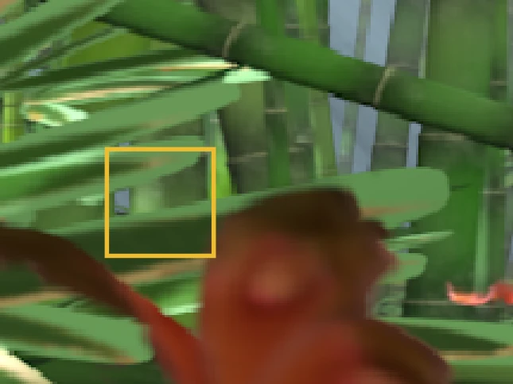
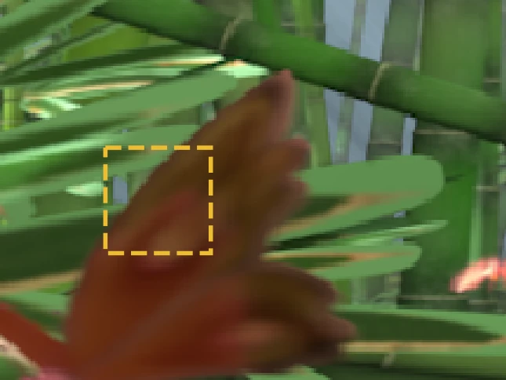
Different appearances across the car body share coherent motion.
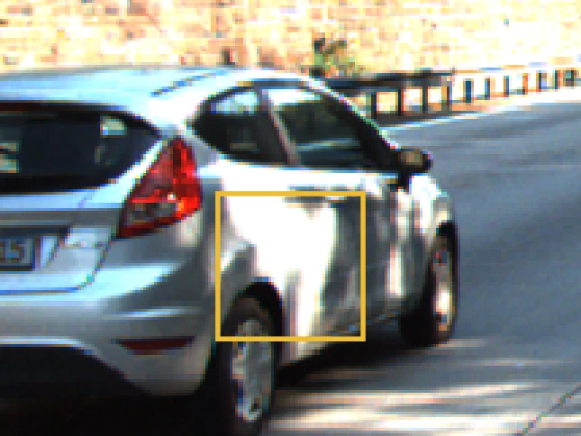
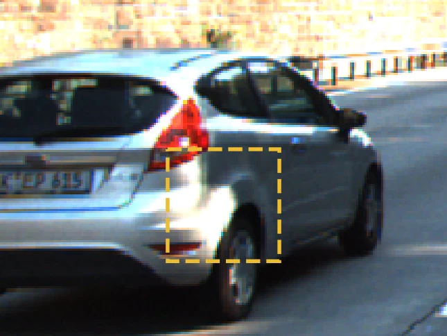
Fixed grids leave the link between evidence and motion to learning
Modern flow networks have improved through richer matching evidence and better use of context: cost volumes, global matching, pretrained features, learned priors, and higher-resolution indexing. Most take fixed grid cells as the correspondence units. Evidence aggregation and flow upsampling then each set up their own association between a unit and the pixels it represents. Whether a unit's matching evidence fits the motion of those pixels is left to learning, especially where observations are weak and neighboring motions conflict.
DACE learns the unit itself
DACE learns which pixels make up each correspondence unit. One set of soft pixel-to-unit assignments, resolved at image resolution, plays three roles:
- Pool dense image features into each unit's matching features.
- Define each unit's flow target from the ground-truth flow of its pixels.
- Distribute each unit's predicted flow back to its pixels.
Matching and refinement then run over fewer units, while the assignments keep pixel-level control over how evidence and flow are shared near fine structures and motion boundaries.
One set of assignments couples evidence and motion
The same learned assignments pool dense features, define unit-flow targets, and distribute unit predictions to pixels. Flow supervision trains them jointly with matching.
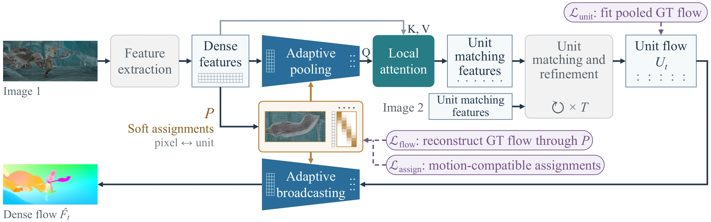
Each pixel predicts a Gaussian over nearby unit anchors
Each unit has an anchor \(q\) on a regular lattice, which fixes the unit count; its pixel support is learned. Pixel \(x\) spreads its weight over the \(3\times3\) anchors around its own cell. A compact head predicts a Gaussian with mean \(\mu_x\) and inverse covariance \(G_x\) over the anchor offsets \(\delta_{xq}\), and normalizes its scores into assignment weights:
A row of \(P\) gives one pixel's weights over nearby units; a column gives one unit's support, which can take an irregular shape and extend across cell borders.
Drag the orange point \(\mu_x\) to move the Gaussian.
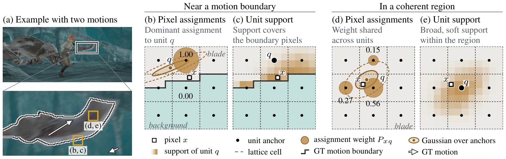
Because matching runs on units, a pixel with a weak or missing match draws on the evidence gathered for its units, while its own assignments control how flow is shared near motion boundaries.
Learned from flow supervision alone
No segmentation labels: three losses on ground-truth flow train the units and the assignments jointly.
Each unit predicts the flow of its current pixel support, supervised by ground-truth flow pooled through \(P\).
Each pixel's assignments learn to favor neighboring unit predictions that are compatible with its own ground-truth flow.
Ground-truth flow pooled into units and broadcast back through \(P\) should match the original, so the grouping preserves motion boundaries.
Units follow motion structure
Each unit's support is learned from flow alone. In the zero-shot model, supports follow fine structures and object boundaries, and neighboring units separate foreground from background motion.
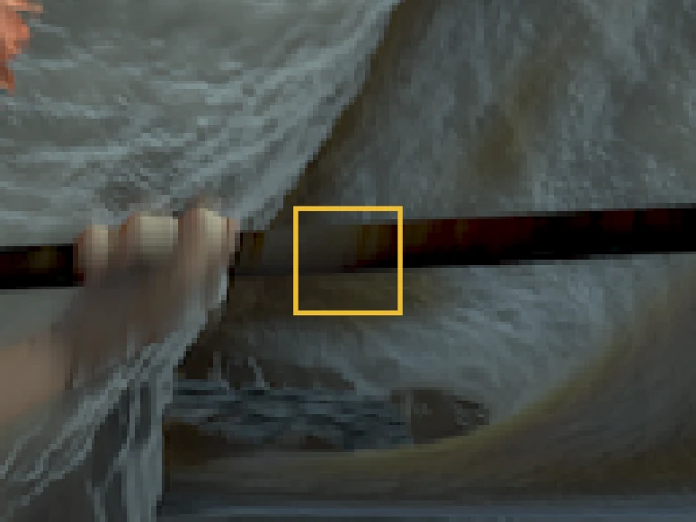
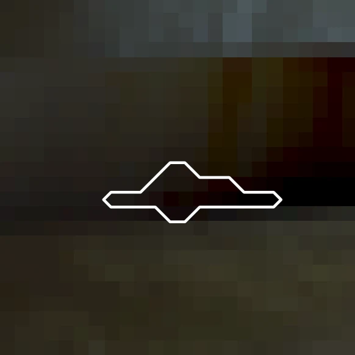
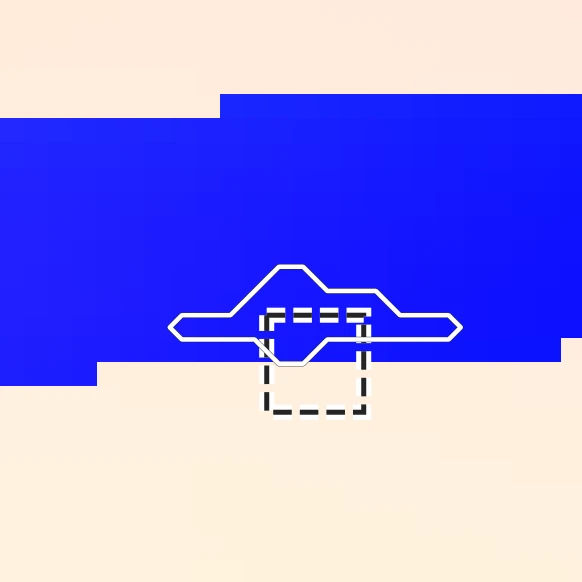
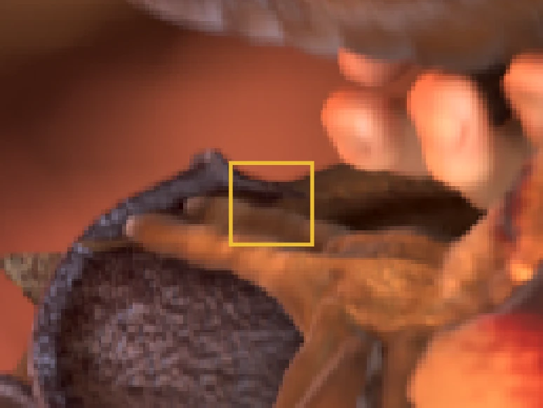
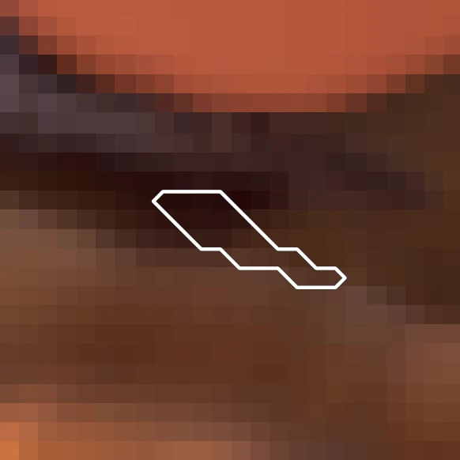
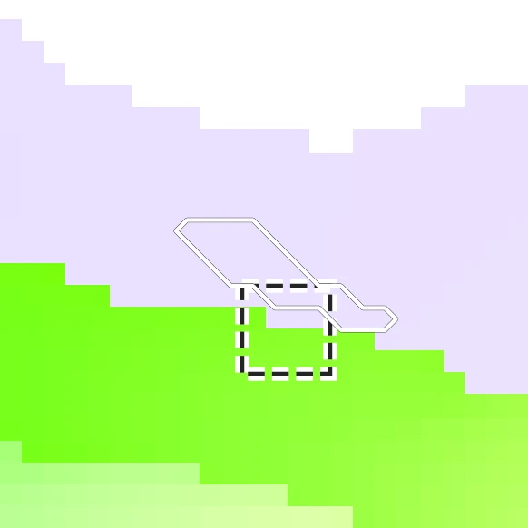
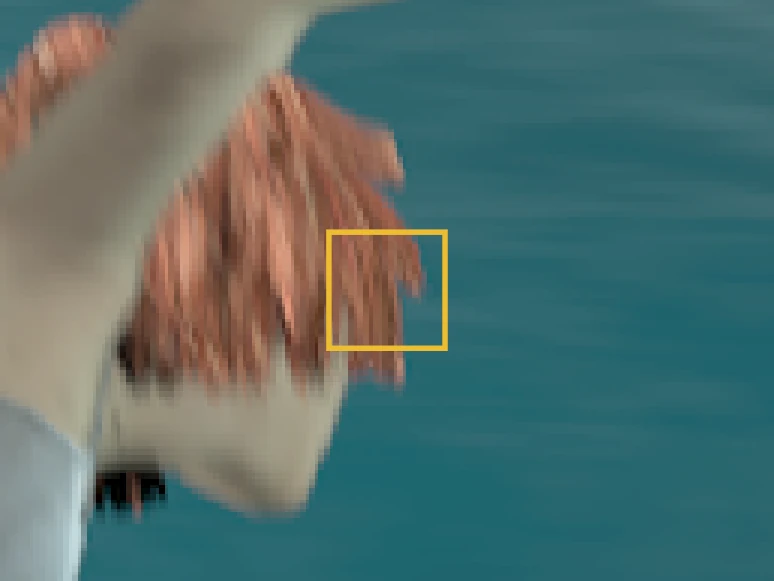
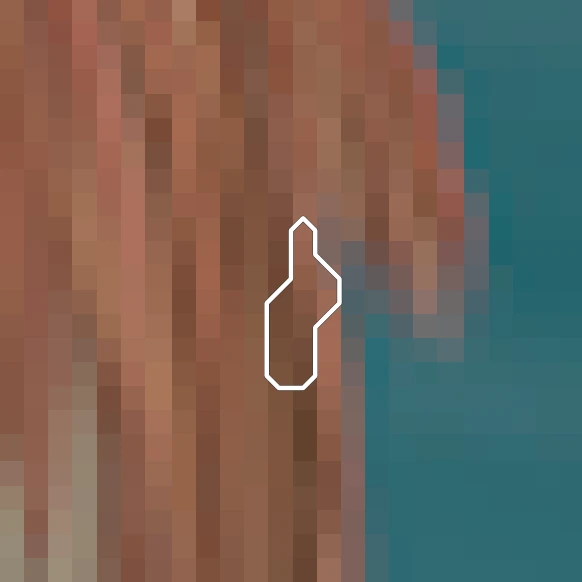
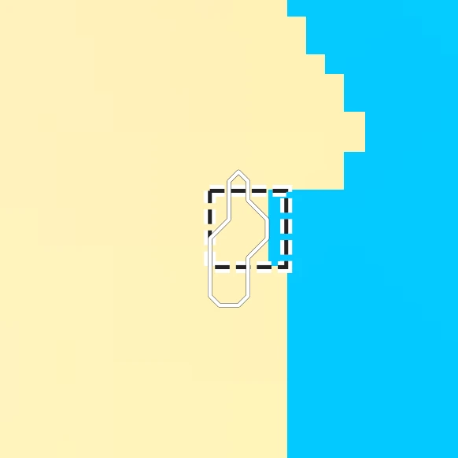
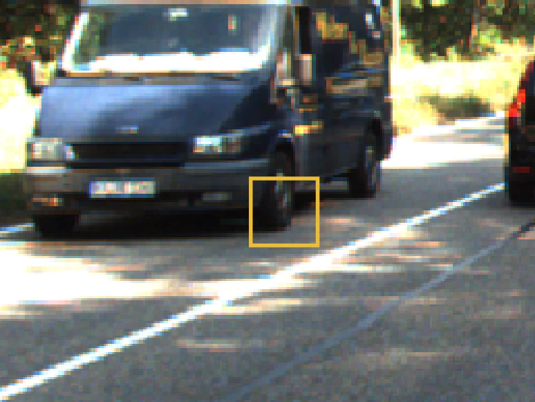
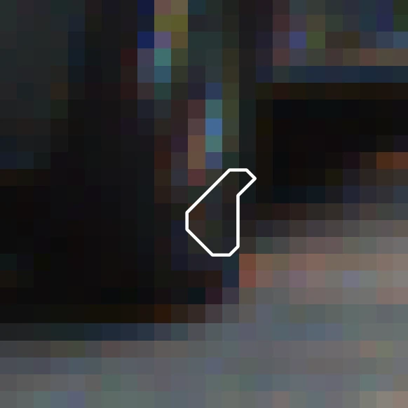
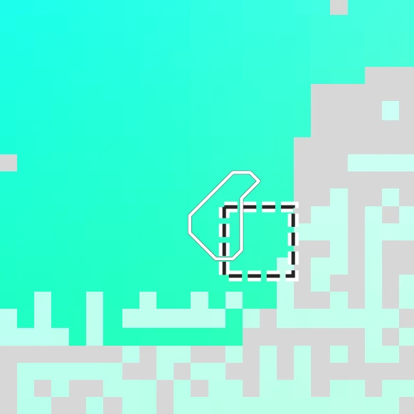
Lowest zero-shot error on Sintel Final and KITTI
All models train on the synthetic FlyingChairs and FlyingThings3D datasets and are tested on Sintel and KITTI without target-domain flow training.
Show the numbers
Show the numbers
Drag to compare WAFT and DACE. Hover to magnify; the panels above mark the same point.
How to read these images
Hue gives the direction of motion and color intensity its speed; white means no motion. Ground truth and both predictions share one color scale per example. In the visibility map, blue marks pixels whose target is occluded or out of frame, gray the other valid pixels, and black excluded pixels. Black in the ground truth marks missing labels; KITTI's sparse labels are enlarged for display.
Adaptive units beat fixed grids at the same unit count
To test the formulation itself, we compare DACE with fixed-grid controls that share its backbone, feature resolution, unit count, refinement framework, and training recipe.
Show the numbers
Show the numbers
DACE learns the units of correspondence for dense optical flow. One set of soft pixel-to-unit assignments gathers each unit's matching evidence and returns its predicted flow to the pixels it represents, so pixels can draw on context where matches are missing while different motions stay apart. Learning the units to match complements learning the evidence used to match them.
Citation
@inproceedings{hsieh2026dace,
title = {Dense Flow from Adaptive Correspondence},
author = {Hsieh, Cheng-Lin and Yu, Stella X.},
booktitle = {Advances in Neural Information Processing Systems (NeurIPS)},
year = {2026}
}Acknowledgements
This project was supported in part by NSF grant 2313151, with additional computing resources provided through NAIRR Pilot CIS240421 and CIS240431. The authors thank SpixelFCN and WAFT for sharing their code.